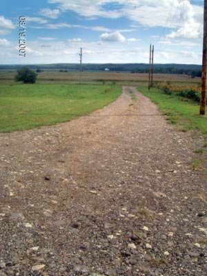

Our driveway is made of crushed asphalt, recycled from material being replaced on Interstate 70. A local construction company, who procured the crushed asphalt, delivered it to our building site. They spread it and packed it down with a motor grader. Then all the construction trucks drove on it, packing it down, while they were building our house.
The asphalt is 6 to 8 inches thick. It costs the same as crushed rock, but we were able to use less of it, so ultimately it was less expensive. We’re very pleased with the firm surface of the driveway.
|
 GREG SCHUETZ Recycled asphalt makes a firm driveway surface.
|
|
|